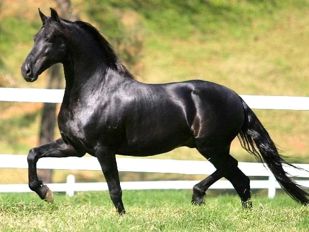

mangalarga

O mangalarga tem morfologia única, com frente leve e pescoço descarnado, garantindo leveza aos movimentos. Paleta inclinada e comprida proporcionam mais conforto ao cavaleiro. Já a garupa forte oferece explosão nos arranques.